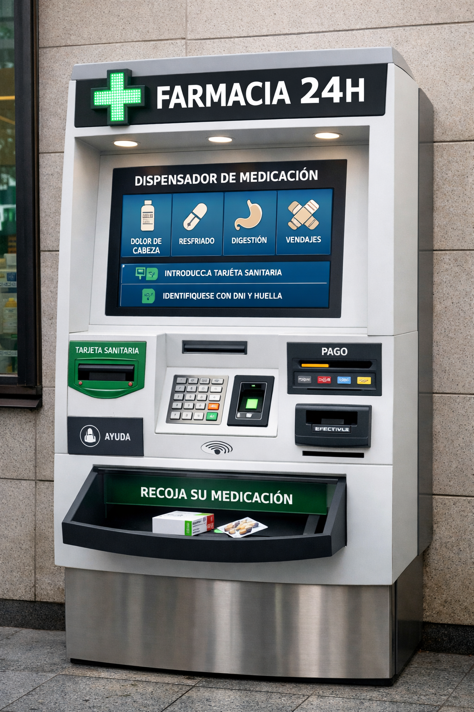
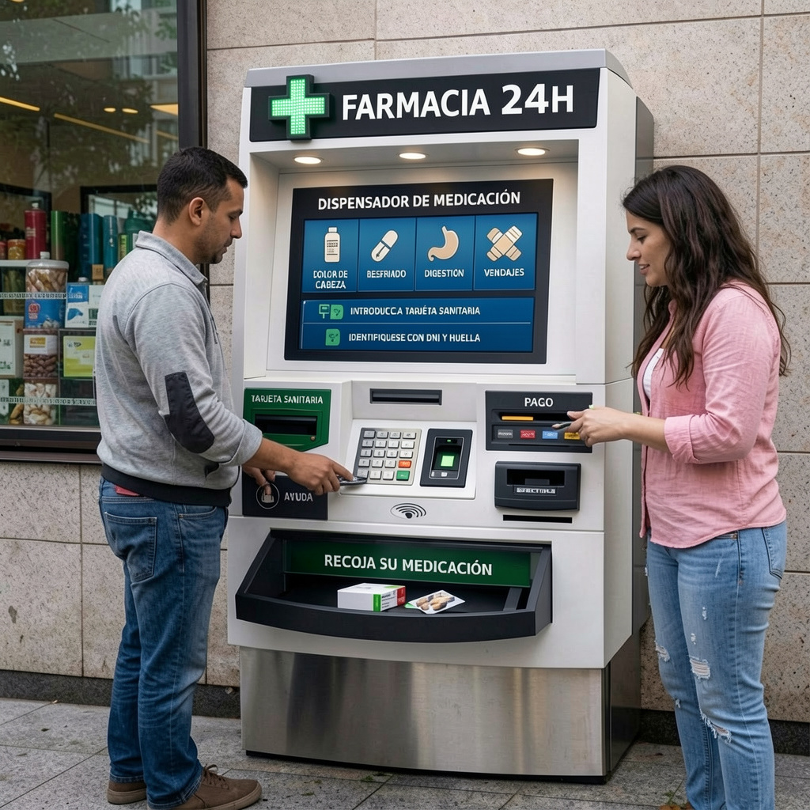

Dispensador Automático de Medicación
Bienvenido a nuestro proyecto innovador de dispensación automática de medicamentos. Descubre cómo la tecnología puede facilitar el acceso seguro a medicamentos en cualquier momento, garantizando comodidad y seguridad. Nuestro sistema está diseñado pensando en farmacéuticos y pacientes, ofreciendo información clara sobre cada medicamento y permitiendo una interacción rápida y sencilla. Además, contribuye a la reducción de errores humanos y al control eficiente de stock, asegurando que los productos críticos estén siempre disponibles.
Este dispensador funciona como un cajero automático de medicación. Permite identificación del usuario mediante métodos seguros, selección de productos de urgencia y recomendaciones según síntomas. La farmacia estará ubicada en Jaén, contará con doble planta y un robot de almacenamiento automatizado. El sistema integra protocolos de seguridad, registro de dispensaciones y educación sanitaria, fomentando el uso responsable de los medicamentos. Además, se prevé la implementación de información interactiva y tutoriales para guiar al usuario en el proceso de selección y uso correcto de los productos.


Verificación automática y mantenimiento rutinario, además de alertas de doble control para reducir errores.
Instalación certificada, revisión periódica y protección contra sobrecargas o fallos de energía.
Resguardos físicos, botones de parada de emergencia y capacitación del personal para uso seguro.
Educación sanitaria para los usuarios, control de dosis, farmacovigilancia y registro de cada dispensación.
Protección de la información personal de los usuarios mediante cifrado y acceso restringido a farmacéuticos.
La automatización en farmacias incrementa eficiencia y reduce errores, permitiendo la dispensación de productos sin presencia constante del farmacéutico. Esto es especialmente útil ante la creciente demanda de medicamentos fuera del horario habitual. Se prevé expansión a otras ciudades y reducción de costes a medida que la tecnología evoluciona. Además, la implementación de estos sistemas facilita el seguimiento de tendencias de consumo, optimiza el inventario y permite una atención más personalizada a los pacientes.
Tu opinión nos ayuda a mejorar el dispensador automático y la experiencia de la web. Déjanos tus sugerencias o comentarios: